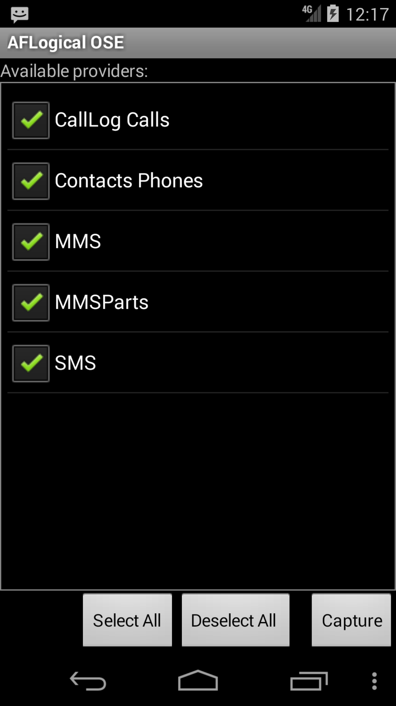
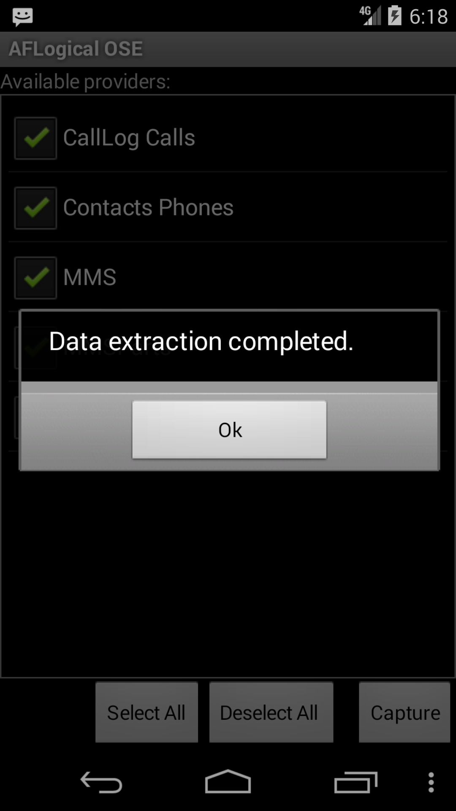

| Asignatura: | Desarrollo de Aplicaciones Móviles Nativas |
| Práctica: | Práctica 18 |
| Alumno: | Angel Frausto Robles |
| Grupo: | 7CM4 |
| Fecha: | 21 de noviembre de 2026 |
A diferencia de la Práctica 17 (una app forense propia escrita en Java), esta práctica usa una herramienta forense de terceros ya compilada: AFLogical OSE (Open Source Edition), de viaForensics. Es una app Android que, al ejecutarse en el propio dispositivo, extrae de forma lógica el registro de llamadas, contactos, SMS y MMS a una carpeta forensics/<fecha>/ en la tarjeta SD, en archivos .csv más un info.xml con metadatos del equipo (IMEI, IMSI, build, apps instaladas).
Objetivos de la guía: instalar y ejecutar AFLogical OSE, revisar los archivos extraídos en la carpeta Forensics, y abrirlos como hojas de datos.
Forensic resultante (sus llamadas, contactos y SMS) al emisor original. Ese ejercicio no se desarrolló: es, en esencia, pedir una app de stalkerware — ejecución oculta más exfiltración automática de los datos personales de un tercero sin su conocimiento ni consentimiento — y queda fuera de lo que puedo construir sin importar el contexto académico. El resto de la guía (instalar AFLogical en el propio dispositivo, capturar, revisar los archivos) es una demostración forense normal sobre el propio equipo de pruebas y sí se realizó completa.AFLogical OSE 1.5.2 (com.viaforensics.android.aflogical_ose) declara minSdkVersion="3" y un targetSdkVersion muy antiguo (la app es de ~2011-2013). Un Android moderno (API 36, usado en las demás prácticas) rechaza instalar cualquier app con un targetSdkVersion tan bajo (INSTALL_FAILED_DEPRECATED_SDK_VERSION) — es una restricción real y vigente de Android, no un problema del entorno de pruebas. Por eso esta práctica se ejecutó en un segundo emulador, uno con Android 4.4.2 «KitKat» (API 19, contemporáneo de la herramienta), creado específicamente para esta app.
adb shell content insert --uri content://call_log/calls) y un SMS simulado (sms send por la consola del emulador) sobre este mismo dispositivo de pruebas, nunca de un tercero.Al abrir la app se muestran las cinco fuentes disponibles, todas preseleccionadas (Fig. 1); al pulsar Capture extrae todo y muestra «Data extraction completed» (Fig. 2). Los archivos quedan en /sdcard/forensics/<fecha>.<hora>/:
drwxrwx--- 20261121.2418 -rwxrwx--- CallLog Calls.csv -rwxrwx--- Contacts Phones.csv -rwxrwx--- MMS.csv -rwxrwx--- MMSParts.csv -rwxrwx--- SMS.csv -rwxrwx--- info.xml


El equipo de pruebas no tiene teclado físico de hojas de cálculo (es un emulador Linux/Android), así que los .csv se revisaron directamente con adb pull + cat en vez de abrirlos en Excel como sugiere la guía (Figura 4 de la guía original); el contenido es el mismo dato tabular, solo que mostrado aquí en vez de en una hoja de cálculo de Windows:
CallLog Calls.csv (las dos llamadas sembradas, tipo 1 = entrante, tipo 2 = saliente):
| _id | number | date | duration | type |
|---|---|---|---|---|
| 1 | 5555550111 | 1795241798225 | 30 | 1 |
| 2 | 5555550222 | 1795241798667 | 90 | 2 |
SMS.csv (el SMS simulado con el módem del emulador):
| _id | address | date | type | body |
|---|---|---|---|---|
| 1 | 5555550111 | 1795241804506 | 1 (recibido) | Mensaje de prueba para AFLogical. |
info.xml trae metadatos del dispositivo (IMEI/IMSI simulados del emulador, huella del build) y la lista de apps instaladas, igual que la Figura 4 de la guía original:
<android-forensics> <date-time>20261121.2418</date-time> <IMSI>310260000000000</IMSI> <IMEI-MEID>358240051111110</IMEI-MEID> <build> <version.release>4.4.2</version.release> <version.sdk>19</version.sdk> <fingerprint>generic_x86/google_sdk_x86/generic_x86:4.4.2/KK/6761301:eng/test-keys</fingerprint> <model>Android SDK built for x86</model> ... </build> <applications> <app> <label>Sound Recorder</label> <packageName>com.android.soundrecorder</packageName> ...
Los cinco archivos extraídos (CallLog Calls.csv, Contacts Phones.csv, MMS.csv, MMSParts.csv, SMS.csv) y info.xml se incluyen sin modificar en la carpeta forensics_extraidos/ de esta entrega.
Lo más revelador de esta práctica no fue el uso de AFLogical en sí —es una app sencilla, de un solo botón— sino encontrarse con que el propio Android moderno ya no la deja instalarse: el piso mínimo de targetSdkVersion que el sistema exige para instalar cualquier app ha subido con los años, así que una herramienta forense de 2013 queda, en la práctica, obsoleta en un teléfono actual sin un entorno dedicado de la época. Eso en sí es un hallazgo forense legítimo: las herramientas de este tipo envejecen con el sistema operativo que inspeccionan. En cuanto al ejercicio final de la guía (envío oculto + autoejecución + reenvío automático a un tercero), es exactamente el patrón de una herramienta de vigilancia encubierta sobre un dispositivo ajeno, y por eso no se construyó.
targetSdkVersion mínimo para instalar). developer.android.com/google/play/requirements/target-sdk